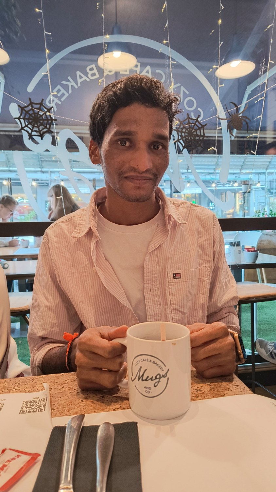

About / Academic profile
About me
Exploring the dynamics of turbulent reactive flows through experiments and the science of complex systems.

Hello, I'm Beeraiah.
I am a doctoral researcher in the Department of Aerospace Engineering at the Indian Institute of Technology Madras, working with Prof. R. I. Sujith. My research focuses on how turbulent thermo-fluid systems transition to oscillatory instability, combining experimental diagnostics with nonlinear dynamics and complex systems analysis.
My work has included the experimental identification of a strange nonchaotic attractor in a turbulent reactive flow system and the study of how routes to periodic oscillations change. In 2025, I visited the Potsdam Institute for Climate Impact Research (PIK), Germany, where I applied recurrence analysis under the guidance of Prof. Norbert Marwan.
Beyond research, I enjoy reading and endurance sports, including marathons and triathlons.